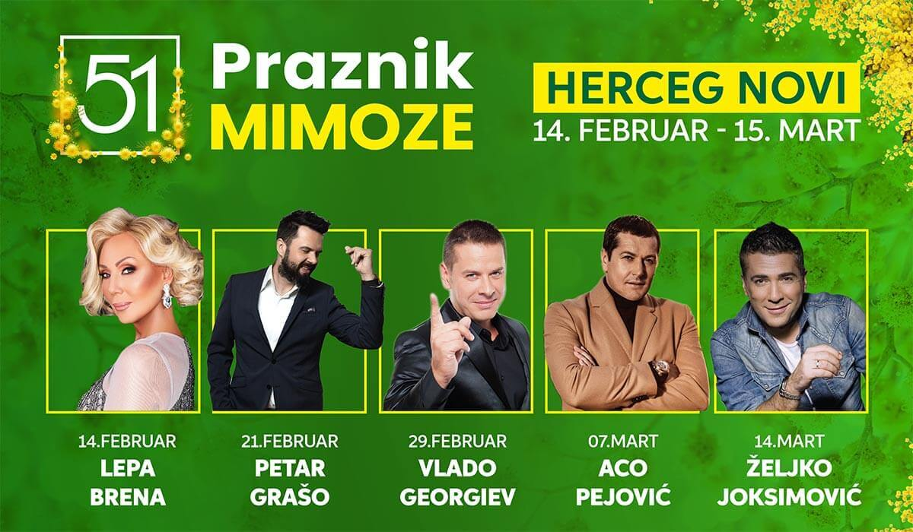
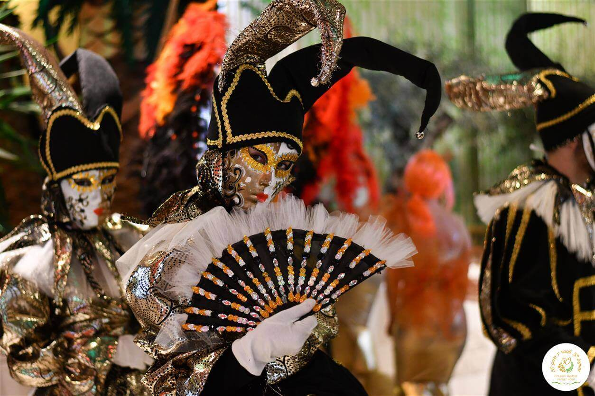

51. PRAZNIK MIMOZE 2022
Praznik mimoze će početi 14. februara 2022. godine, a muzičke zvijezde koje će obogatiti otvaranje i zatvaranje najstarijeg hercegnovskog festivala su Lepa Brena i Željko Joksimović.

Slogan prve nedjelje 51. Praznika mimoze je „Mimoza za dobra stara vremena“, druge nedjelje „Punom forcom, jer mimoza je!“, treće „Ljubav u vijeme mimoze!“, a četvrte „Mimoza za sva vremena!“, kazala je direktorica Javne ustanove kulture „Herceg Fest“ Gordana Porobić Krcunović.
Veliki koncert otvaranja 51. Praznika mimoze zakazan je za 14. februar, kada će na platou ispred hotela ”Igalo” nastupiti jedna od najvećih regionalnih muzičkih zvijezda Lepa Brena. Dan kasnije, u subotu 15. februara održaće se tradicionalna Fešta od mimoze, ribe i vina na hercegnovskoj rivijeri.
Uslijediće mjesec bogat raznovrsnim programima, tokom kojeg će Herceg Novi svakog vikenda biti mjesto za spektakl - Petar Grašo će nastupiti 21. februara, Aco Pejović 07. marta, a na zatvaranju 14. marta očekuju nas međunarodna karnevalska povorka i koncert Željka Joksimovića.
Maskenbal mimoza
Pored koncerata na otvorenom, vikendima će na programu biti maskenbali na kojima će nastupati poznata muzička imena. Večeri pod maskama 51. Praznika mimoze planirane su 15. februara, 06. marta i 13. marta. Tradicionalna Riblja večera održaće se 22. februara.

Pored neizostavne fešte na hercegnovskoj rivijeri, na Škveru će biti upriličeno još pet fešti ribe i vina, uz sajam domaće trpeze. Neće izostati ni sportski programi i sadržaji za djecu koji su godinama sastavni dio Praznika mimoze. Imajući u vidu da je glavni program najznačajnije turističko-propagandne zimske manifestacije spreman mnogo ranije nego što je to bio slučaj proteklih godina, promotivne aktivnosti počeće već od sjutra, na Sajmu turizma u Novom Sadu i trajaće u kontinuitetu tokom narednih četiri mjeseca.
Dejan Matić vas poziva na praznik Mimoze i druženje uz njegove pesme 6. marta
Novitet u odnosu na protekle godine je da će i na fešti od mimoze, ribe i vina na hercegnovskoj rivijeri, pored Gradske muzike Herceg Novi, Mjesne muzike Đenović i mažoretki, nastupiti i muzička zvijezda – Kaliopi. Na tom događaju očekuje se oko 15 hiljada posjetilaca, kazao je Zoran Živković.Sve to, uz dobru promociju koja je na vrijeme pripremljena, treba da doprinese dobroj posjećenosti i popunjenosti smještajnih kapaciteta van ljetnje sezone, što je i osnovni cilj organizatora Opštine Herceg Novi i Turističke organizacije Herceg Novi i izvršnog producenta Javne ustanove kulture ”Herceg Fest”.
Otvara Lepa Brena, zatvara Željko Joksimović
Na spisku izvođača koji će tokom februara i marta nastupiti u Herceg Novom nalaze se zvučna imena regionalne muzičke scene. Na otvaranju Praznika mimoze 14. februara nastupiće Lepa Brena, dan kasnije na Berbi mimoze Kaliopi, a festival će biti zatvoren koncertom Željka Joksimovića 14. marta. Tokom mjesec dana Novljane i goste će zabavljati i: Goran Karan, Ana Štajdohar, Dejan Matić, Vlado Georgiev, Aco Pejović, Magla bend, OK bend.
Rezervišite svoje mesto u apartmanima MONAKO (klikni za detalje) na vrijeme i budite dio neverovatnog praznika mimoze 2020. godine u Herceg Novom.
* Podsjetimo i da su organizatori odlučili da se prvi put poslije 50 godina početak Praznika mimoze izmjesti s prve nedjelje februara, na sredinu tog mjeseca. Razlozi za to su loše vremenske prilike koje su pratile pučke svečanosti i koncerte poznatih zvijezda na otvaranju.
PROGRAM
8. FEBRUAR / SUBOTA
53. HERCEGNOVSKI ZIMSKI SALON
Izložba Galerija Josip Bepo Benković14. FEBRUAR / PETAK
IZLOŽBA CVIJEĆA - otvaranje
Hotel VojvodinaOTVARANJE
Plato ispred Hotela, IgaloLEPA BRENA
koncert Plato ispred Hotela, Igalo15. FEBRUAR / SUBOTA
FEŠTA OD MIMOZE, RIBE I VINA KALIOPI - Đenovići
Kumbor, Baošići, ĐenovićiMASKENBAL MAGLA I OK BEND
Institut Igalo16. FEBRUAR / NEDJELJA
BAZAR DOMAČE TRPEZE
Autentični porizvodi novskog podneblja ŠkverATAMANI
Kozački ansambl Dvorana Park20. FEBRUAR / ČETVRTAK
LEPA BRENA PROJECT
BITEF Teatar Predstava Dvorana Park21. FEBRUAR / PETAK
SALON VINA
Compania De Vinos Lazure Hotel & MarinaPETAR GRAŠO
Koncert Plato Ispred Hotel Igalo22. FEBRUAR / SUBOTA
SALON VINA
Compania De Vinos Lazure Hotel & MarinaGALEB KOJI SE SMEJE
Nikola Malović promocija knjige Dvorana PARK, foajeRIBLJA VEČERA
Magazin Institut Igalo23. FEBRUAR / NEDJELJA
BAZAR DOMAĆE TRPEZE
Autentični proizvodi novskog podneblja ŠkverDJEČIJI MASKENBAL
Institut Igalo27. FEBRUAR / ČETVRTAK
"The Allman Brothers Band"- PRIČA O JUŽNJAČKOM ROKU
Bistro Lonuge Bar "BELAVISTA" & "JIM BEAM"28. FEBRUAR / PETAK
KONCERT TRIBUTE BENDOVA
Park Boke29. FEBRUAR / SUBOTA
DJEČIJA CIJETNA POVORKA
VLADO GEORGIEV
Koncert Plato Ispred Hotela Igalo1. MART / NEDJELJA
BAZAR DOMAĆE TRPEZE
ŠkverPICIGIN - GORAN KARAN
Takmičenje Plaža Rafaello, ToplaDONATORSKI BAL POD MASKAMA - ANA ŠTAJDOHAR
Lazure Hotel & Marina5. MART / ČETVRTAK
MALI SALON HERCEGNOVSKIH GALERIJA
Izložba Dvorana PARK, foajeVEČE MEDITERANSKE PJESME
Gradska kafana6. MART / PETAK
MASKENBAL - DEJAN MATIĆ
Institut Igalo7. MART / SUBOTA
TRKA KARIĆA - KAROTRC
Rudnik ŠkverDANI MAĐARSKE KULTURE
ŠkverACO PEJOVIĆ
Koncert Plato ispred Hotela Igalo8. MART / NEDJELJA
BAZAR DOMAĆE TRPEZE
Škver12. MART / ČETVRTAK
EKVINOCIJO
Predstava Dvorana Park13. MART / PETAK
MEUNARODNI SUSRET DUVAČKIH I MAŽORET ANSAMBLA
Defile14. MART / SUBOTA
MEĐUNARODNA KARNEVALSKA POVORKA
ZATVARANJE
ŠkverŽELJKO JOKSMOVIĆ
Koncert Plato ispred Hotela Igalo